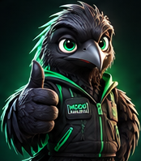
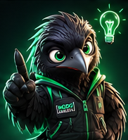
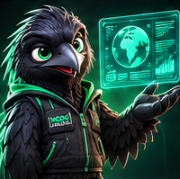

De una idea a una identidad visual en movimiento. Copia cada prompt, pégalo en tu IA y sigue el proceso.

Brief interactivo de 5 preguntas y primera propuesta visual.

Sube tu logo y obtén un prompt en JSON listo para tu IA de animación.
